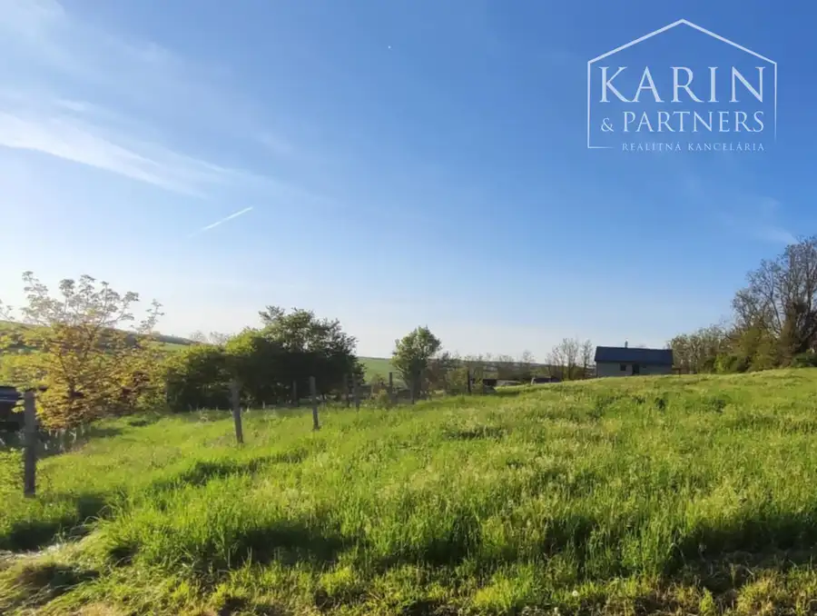
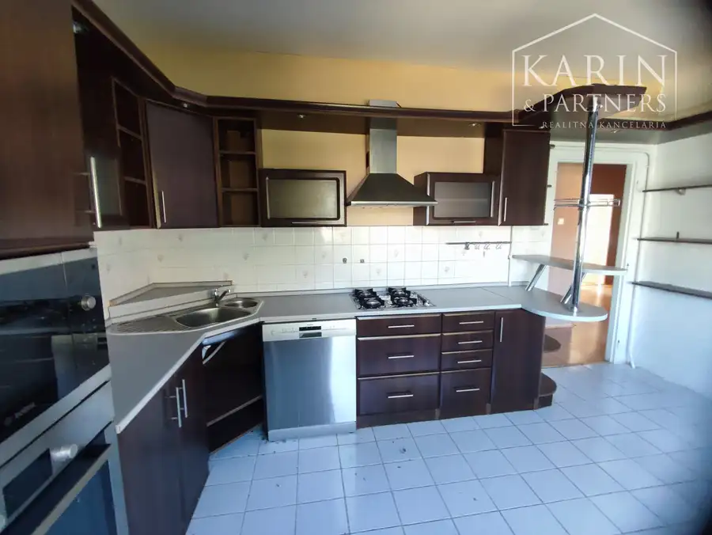
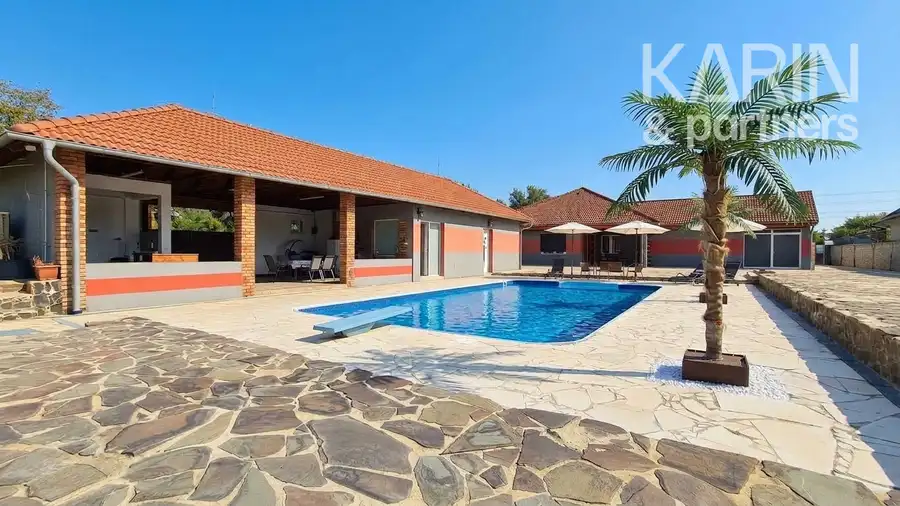
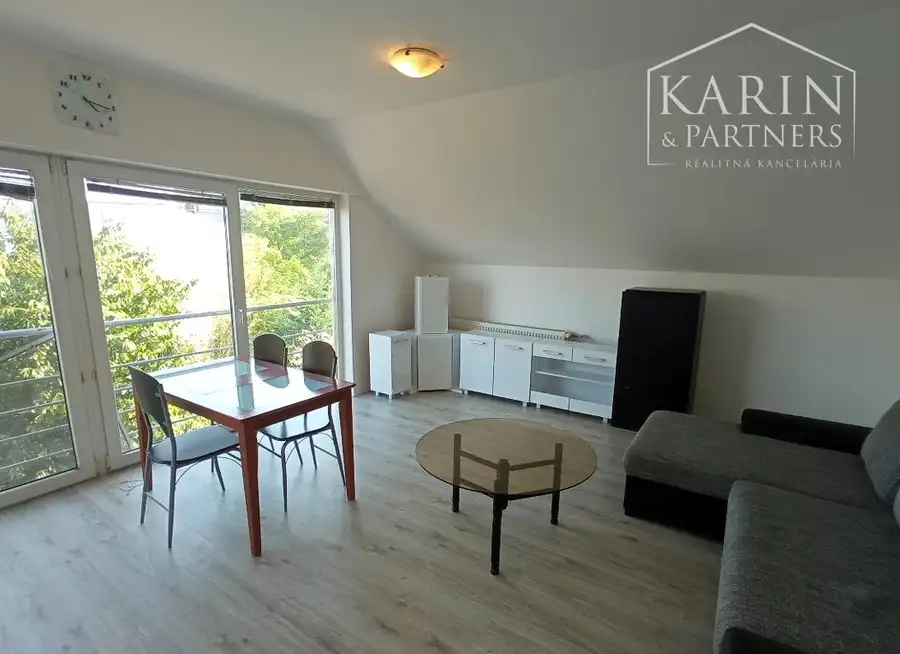

Predaj · Pozemok
Znížená cena: Stavebný pozemok, obec Čechy
Čechy
27 900 €23 € za m²

- Plocha1200 m²
- VlastníctvoOsobné
O nehnuteľnosti
Na predaj stavebný pozemok v obci Čechy. Výmera: 1200 m2. Pri pozemku sú všetky inžinierske siete. Benefitom pozemku je možnosť okamžitého alebo postupného odpredania jeho častí /rozdelenia na 2, prípadne 3 časti/.VÝHODY:výhodná investičná príležitosťveľký pozemokúrodná zemdobrá polohak dispozícii ihneďCENA: 27.900,- EuroV cene sú zahrnuté:- komplexné právne a katastrálne služby spojené s prevodom nehnuteľnosti vrátane poplatku za kataster; ich rozsah tu: https://www.karinpartners.sk/pravne-sluzby - profesionálne a rýchle vybavenie hypotekárneho úveru; rozsah fin. služieb tu: https://www.karinpartners.sk/financne-sluzbyKONTAKT:Ing. Richard Klučiar+421 907 561 191kluciar@karinpartners.sk
Parametre
- Druh
- Pozemok pre bytovú výstavbu
- Dátum zverejnenia
- 02. 05. 2025
- Elektrina
- Pri pozemku
- Plocha pozemku
- 1200 m²
- Plyn
- Pri pozemku
- Typ
- Predaj
- Vlastníctvo
- Osobné
- Voda
- Pri pozemku
Kde to je


Ďalšie ponuky
Celá ponukaMohlo by Vás zaujímať

DomNové 229 900 €*Výhodná ponuka* Veľký poschodový rodinný dom s dvomi garážami, v oblúbenej pokojnej lukratívnej lokalite, Nové Zámky Nové Zámky 340 m²
DomNové 324 000 €Exkluzívne Iba u Nás: Rodinná rezidencia v štýle haciendy: 2 samostatné domy, bazény, okrasná záhrada a dokonalé súkromie | Semerovo Semerovo 290 m²
BytNové Cena na vyžádáníPrenájom 2-izbového bytu v tehlovej bytovke - novostavba – Nové Zámky Nové Zámky 2-izbový55 m²